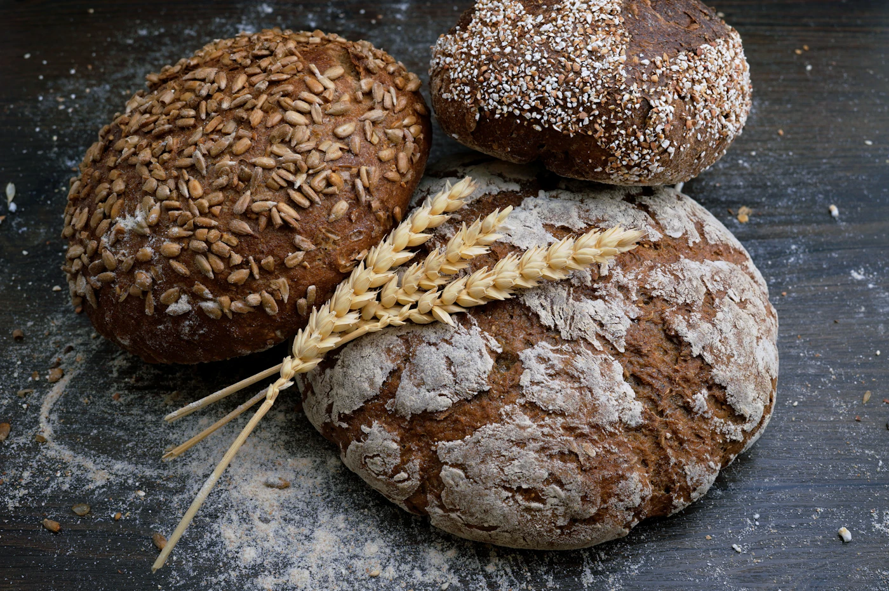
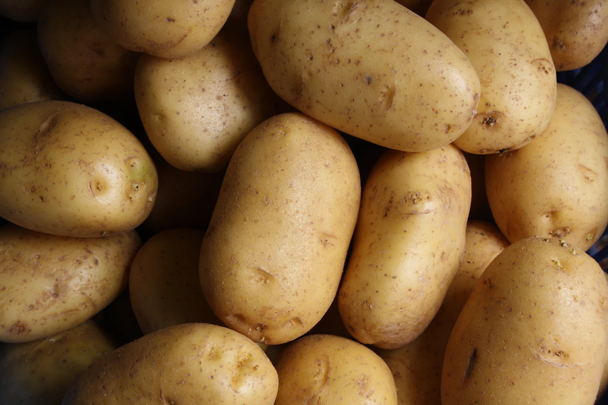
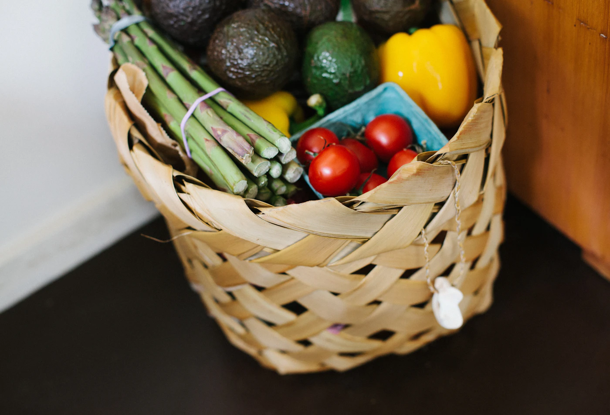

TIENDA DE ALIMENTACIÓN
AVENIDA DIPUTACIÓN, 5 · EL BOSQUE
APUNTES DE LO COTIDIANO
De la lista
a la mesa.
Lo que cocinamos, lo que compartimos, lo que forma parte de un día cualquiera. La alimentación está en esos pequeños gestos.


Estas imágenes hablan de alimentación. Son ilustrativas: no muestran el local ni un catálogo de productos de Roymar.
GUARDA LA DIRECCIÓN
ROYMAR · EL BOSQUETE ESPERAMOS EN
Avenida
Diputación,
NÚMERO5
Roymar · Tienda de alimentación
Avenida Diputación, 5
11670 El Bosque, Cádiz, EspañaAbrir Google MapsLA DIRECCIÓN PARA TU VISITA
Avenida Diputación, 5
11670 El Bosque, Cádiz, EspañaAbrir Google MapsLA DIRECCIÓN PARA TU VISITA